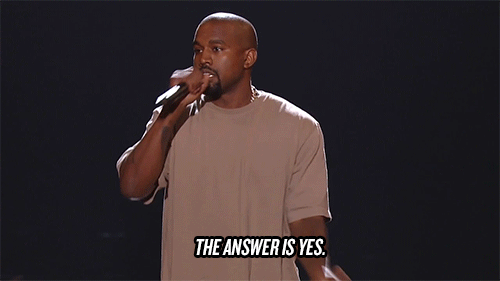

Hittup
Mobile App Project
Hittup changes your social life by enabling everyday spontaneity. It's the only app you can literally open up and find nearby friends and fun right now. The majority of most people’s day-to-day activities are small and improvised. The goal of Hittup is to inspire you to be more social and make the most of your time — now.
I have worked on this app since the beginning of June 2015 with a friend who was the primary iOS developer. I was responsible for UI/UX Design, growth, and marketing for the product.
Link to Pitch Deck
Problem
It’s hard to coordinate plans with friends.

At the beginning of sophomore year (late 2014), my friend, Arthur, and I discussed how much we missed the dorms and how much harder it is to make plans with friends. Being in the dorms was a super fun experience; any time you wanted do something with friends, all you had to do was yell down the hall and knock on a couple doors to see if people were down to join you.
After discussing this problem extensively and having a brainstorming session at our place, we decided to solve this problem with a mobile app.
We didn’t know a thing about marketing, UX, design, backend, iOS development, how to get an app on the App Store, etc. We just wanted to build an app to help ourselves and our friends.
Thus, Hittup was born and it became our baby for the next 12+ months.
After these initial sketches, we figured out the key features for Hittup. The main idea was centered around event-focused messaging.
Target Audience
College students, 18–22 years old
Solution
Hittup was a event-focused messaging app centered around sharing your plans with friends. It combines the casual nature of social networks with the organizational power of your favorite calendar app.
We wanted our physical features to do the following:
- Reduce the barrier to initiate plans with friends
- Low-risk way to express openness to hanging out with friends
- See your social options
Our values
These are the values we wanted to change the world with
- Emphasis on in-person friends
- See actionable opportunities around you
- Make social life more like dorm social life
- Value character over reputation
- Turn acquaintances and strangers into friends
- Make life more happy, open and social

Even after understanding all of this, our first wireframes and design prototypes weren’t too pretty.
This one of the first products I designed so I didn’t know much about Sketch, Invision, design guidelines, or anything else for that matter, but perhaps that was a good thing. Since I knew the visual design was not going to be the most polished, we could focus on the real stuff — understanding users and designing a product around them.
This wasn’t able to be implemented. The navigation design wasn’t grounded and didn’t conform close to iOS guidelines. So I went ahead and whipped up another set of mockups.
We wanted our app to provide an easy way for users to share their immediate to short-term plans to other people who can join them.
After playing around with this, and testing it internally with friends on TestFlight, we found out the app was clunky, hard to use, and didn’t provide that much value upfront to users since not everyone had the app. Our app design was cluttered, un-intuitive, users didn’t know what the call-to-action was, weren’t inspired to post, and just fell back to old habits like texting and calling for making plans. We found that overcoming the chicken and the egg problem was extremely difficult, but that’s another topic.
After playing around with multiple iterations like building a voting system to choose with to go, separating events by cities, and a ton of other stuff, we decided to change our main layout of our app to a map view because location is a central factor in showing users how actionable and immediate hangouts can be.
Side Note
One thing I learned from doing this is making a visual style guide early on is a smart thing to do so we don’t go back and forth on using different elements, fonts and colors. Need to save time and focus on what really matters. Shipping the best product for the user.
Shipped Version
In this version, “Hittups” (events) were separated in two tabs: ongoing and today. Hittups lasted a finite amount of time you set it to and after they expired they went into the today tab. We wanted to create an environment focused around actionability and spontaneity.
You were able to see where exactly your friend posted the “Hittup” (event), and you hit the “Take me there” button and Apple Maps would open you’d be able to get directions to your friend’s location. In this version, it was much easier to send quick invites to friends for hangouts and easier to get there. We were able to get several of our friends to post fun things they were doing like “Hot tubbing”, “Grabbing frozen yogurt” or “Play basketball with me”; however, our user-retention tanked once users didn’t get the perceived value.
Friends were rarely physically joining each other’s Hittups. Why would you continually post if you didn’t receive value? We had a working product, now we had to solve the dreaded chicken and the egg problem. We had a couple ideas we explored.
We decided to put nearby events we got from student organizations on campus in our app, so initial users didn’t download and find themselves an empty app. We also tried to use the Facebook API, scrape Facebook, but that didn’t turn out well, so we talked and partnered with multiple clubs on campus to help promote their events inside our app.
We still struggled with retention. Conversion was tough enough. It was tough enough to get our friends to download an app. After trying it, most of them didn’t really come back despite having a good amount of Facebook events on it. The problem was that Facebook had all the social context and we didn’t. Though Facebook had a terrible interface and experience, that’s where everyone was. All the posts, all the invites, all the yes’s, maybes, and no’s, all the people. Our app didn’t have anything except the event picture, information, and some people. All the context was on Facebook.
Arthur and I brought on two new teammates to help us — Shannon and Sahmoud. Shannon was a psychology major who helped us with marketing and user research. Sahmoud was a backend wiz who helped us transition off Parse and onto a scalable backend built with Node.js and MongoDB.
Shannon helped us take high-quality photos (like the top cover photo) for branding and marketing. She also ran Facebook Ads to drive conversion and grew our social media presence and community.
More importantly, she helped us conduct user research to help us understand how people make plans with friends and understand how “spontaneous” their plans usually are. She generated a comprehensive survey with Typeform.
The assumptions Arthur and I made in the past were right. College students make frequent and spontaneous plans through primarily through text message. We weren’t trying to replace making plans via text-message. We wanted it to be easier for friends to express their willingness to hangout and more social options to be readily available to everyone. Our friends understood the problem we were trying to solve, yet we were unable to execute and solve it.
Sahmoud was able to build our backend and Arthur (iOS dev) was able to hook it up to our app and move off Parse. This was great and it was much better moving off Parse and it’s limited functionality, but that didn’t really give much value to users.
We were stressed, pulling our hair out, and above all, frustrated with not only ourselves, but also each other. We tried to grow our app, drive conversion, keep retention up, told all our friends and students organization to use our app, but nothing sticked.
We argued with each other. We had work and personal conflicts that broke us apart as a team and as friends. Eventually, we went our separate ways and now Hittup is off the app store.
I learned how important communication is in a team. One must communicate clearly, frequently, and effectively. In almost all cases, over-communication is the best way to go. Being direct and having open-hearted honesty is essential.
I learned how essential it is for the team to be aligned in terms of effort, goals and vision. Diversity is great and necessary for a successful team; however, diversity of values is something that should never be compromised on.
I learned how important it is to divide responsibilities and put them in writing, so if an argument gets out of hand and a decision needs to be made you can always refer back to the paper. As Micheal Siebel said, “You have to agree upfront which parts of the company you will be working on, and which your friend/co-founder will be working on.” Knowing this beforehand would have led to fewer design, development, and marketing disagreements.
I learned how important it is to understand the user and problem you are solving. You can’t build a solution to a problem that doesn’t exist, or in most cases, a problem you don’t completely understand.
I learned you can talk, argue, think, do research, focus groups, but nothing works better than building a product, getting it in the hands of users, and figuring out what works and what doesn’t.
After this shit show failure, am I going to try something like this again?
The answer is hell yeah! This was a learning experience. You either win or you learn. Crashing and burning was a growing experience. It’s all about learning. If you don’t make mistakes, you never learn. And if you never learn, you can’t succeed. And I will succeed.